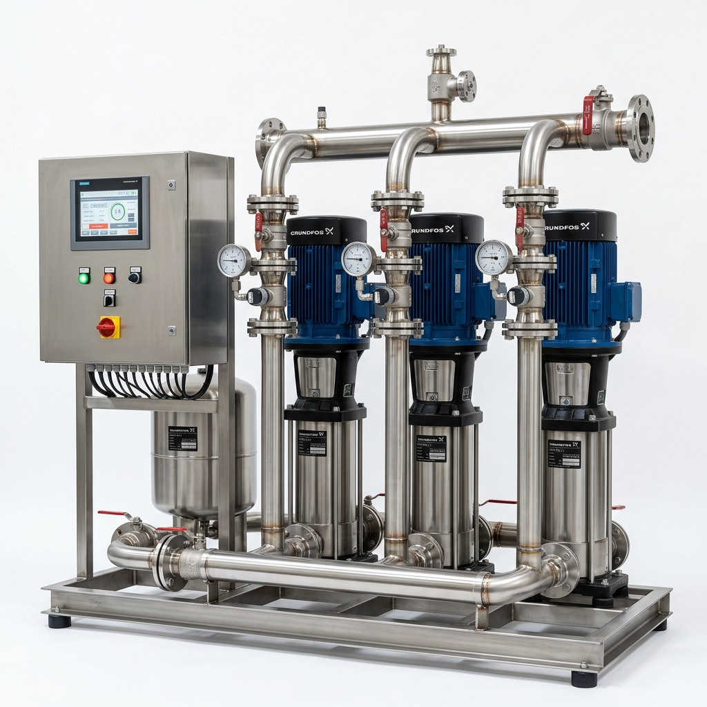
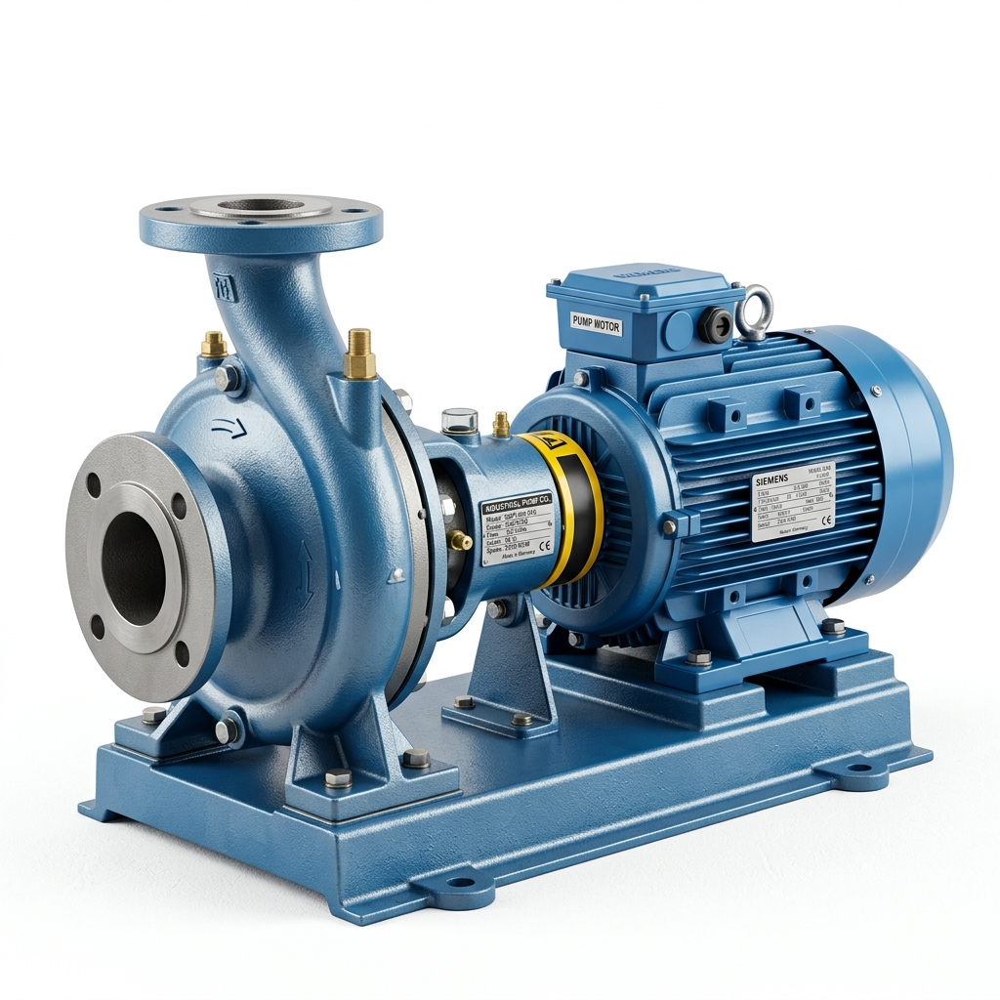

Pump Lineup
비에이텍 주요 펌프 기술
최첨단 기술력으로 완성된 고성능 펌프 솔루션입니다.

부스터펌프
건물 내 일정한 수압을 유지하여 쾌적한 물 사용 환경을 조성합니다. 여러 대의 펌프를 병렬로 연결하여 사용량에 따라 자동 제어함으로써 전력 절감 및 수명 연장이 가능한 스마트 급수 시스템입니다.

수중펌프
완전 방수 설계로 수중에서 직접 작동하며 침수 위험 없이 안정적인 배수를 담당합니다. 상하수도 처리장, 지하 공간 배수 등 가혹한 환경에서도 탁월한 내구성을 발휘하는 핵심 장비입니다.

슬러지펌프
고형물이나 이물질이 섞인 고점도 유체를 막힘 없이 이송합니다. 비폐쇄형 임펠러 구조를 채택하여 산업 폐수 처리 및 축산 분뇨 처리 등 일반 펌프가 대응하기 어려운 현장에 최적화되어 있습니다.

일축나사식 모노펌프
맥동 없이 일정한 양의 유체를 이송하는 고정밀 펌프입니다. 로터와 스테이터 사이의 공간을 통해 유체를 밀어내어 소음과 진동이 적으며, 식품 및 화학 공정 등 정밀한 계량이 필요한 환경에 사용됩니다.

편흡입볼류트펌프
단순하고 견고한 구조로 유지보수가 매우 용이한 범용 펌프입니다. 아파트 저수조 급수, 산업용 냉각수 순환 등 다양한 유체 이송 환경에서 가장 경제적이고 신뢰할 수 있는 대중적인 선택지입니다.

정량펌프
설정된 미세 유량을 오차 없이 초정밀하게 투입합니다. 디지털 컨트롤러를 통한 세밀한 제어가 가능하며, 내화학성 소재를 사용하여 수처리 공정이나 약품 배합 공정 등 높은 신뢰성이 요구되는 현장에 필수적입니다.